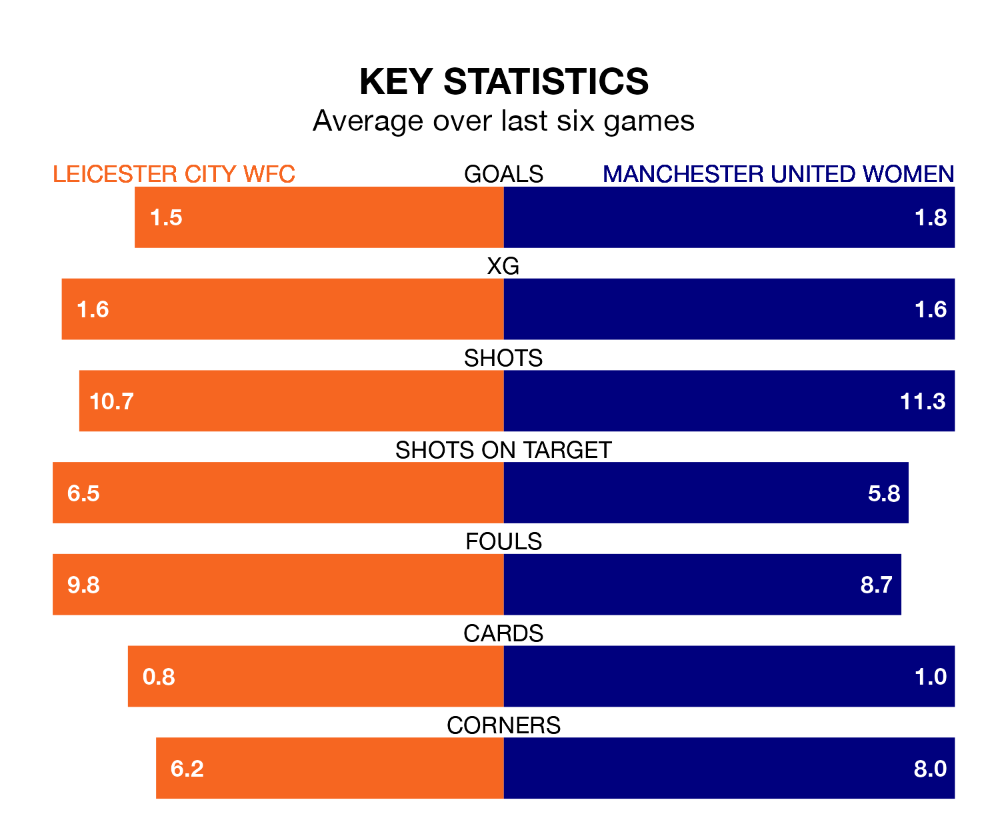

Relegation candidates Leicester City WFC face a challenge against high-flying Manchester United Women at the King Power Stadium on Sunday.
Leicester City WFC are 10th in the FA Women's Super League table, and have picked up four wins and five draws in their 19 games to date.
The Red Devils, meanwhile, are fourth in the standings with 32 points, having won nine and drawn five, and are 17 points behind table-toppers Manchester City Women.
With 41 goals in 19 games so far this season, Manchester United are scoring more than average in the league with 2.2 goals per game. And they are conceding fewer than average, letting in 25 goals at a rate of 1.3 per game.
Leicester City WFC, meanwhile, are below average scorers, with 1.3 goals per game, compared to a league average of 1.7. They have conceded 2.1 goals per game.
In Mary Earps, the Red Devils can rely on one of the league's safest pair of hands. She has kept six clean sheets in her 19 appearances this season, and only one other 'keeper – Manchester City Women's Khiara Keating – has been able to prevent the opposition scoring on more occasions in the FA Women's Super League.
In the hosts' net, Janina Leitzig has one clean sheet in 11 games. She has conceded a goal every 50 minutes, 40% more often than the 71 minutes between goals for Earps.
In the last 10 years, Leicester City WFC and Manchester United have played each other on 11 occasions. Leicester City WFC won one of them, Manchester United eight, and they drew twice.
On average, Leicester City WFC scored 1.0 goal and the Red Devils 4.1 in those matches.
Their last meeting was on December 14, when Manchester United won 3-1 at home.
Leicester City WFC are in bad form in the FA Women's Super League, with one win and a draw from their last six games.
With two wins and two draws over that period, the away team's form is better – they have taken eight points from 18, compared to Leicester City WFC's four.
Leicester City WFC's last match was on April 21, a 3-0 loss against Arsenal Women.
Manchester United drew 2-2 with Tottenham Hotspur Women last time out, also on April 21, with Maya Le Tissier and Melvine Malard on the scoresheet.
Updated: 07:59 (UTC), 26/04/24